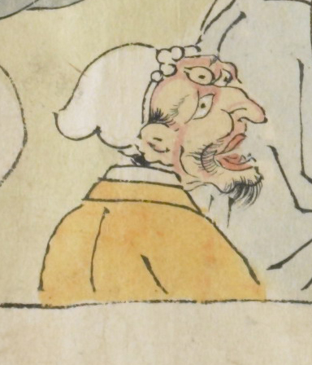

額に大きな目玉のある三つ目の鬼。薄く口髭、顎髭を伸ばし、口を半開きにひらいている。白い帽子をかぶり、黄土色の衣服を身につけている。
出典：親書誌：U426_nichibunken_0079：酒天童子絵巻；シュテンドウジエマキ／日付：2006／資源識別子：U426_nichibunken_0079_0007_0009
Copyright (c)2010- International Research Center for Japanese Studies, Kyoto, Japan. All rights reserved.